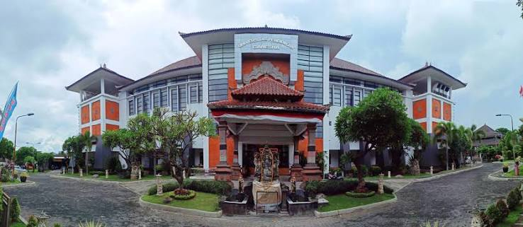
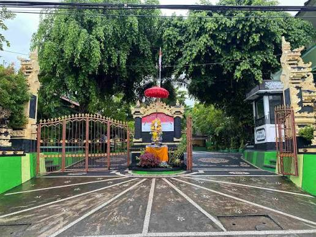
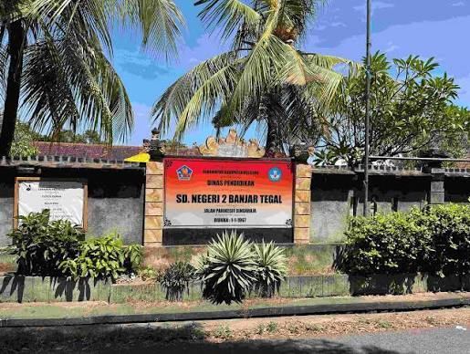

Jejak langkah pendidikan saya dari Sekolah Dasar hingga Perguruan Tinggi.
Universitas Pendidikan Ganesha

Fokus pada rekayasa perangkat lunak, pengembangan web, pengembangan aplikasi, teknologi game, serta aktif di organisasi kemahasiswaan.
Jurusan TJKT (Teknik Jaringan Komputer dan Telekomunikasi)
Aktif dalam ekstrakurikuler Futsal, serta mengikuti kegiatan magang di Industri selama 6 bulan.

